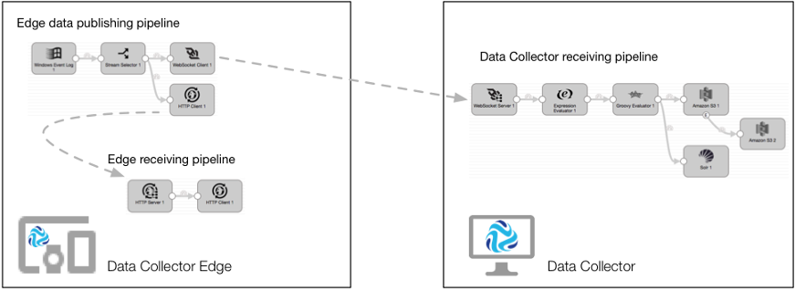
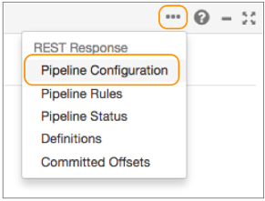
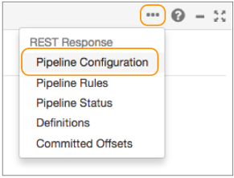

Edge Pipelines
Edge Pipelines Overview
An edge pipeline is a pipeline that runs on an edge device with limited resources. Use edge pipelines to read data from the edge device or to receive data from another pipeline and then act on that data to control the edge device.
You can design edge pipelines in Data Collector or StreamSets Control Hub. You run edge pipelines in edge execution mode on StreamSetsData Collector Edge (SDC Edge). SDC Edge is a lightweight agent without a UI that runs pipelines on edge devices. Install SDC Edge on each edge device where you want to run edge pipelines.
- Edge sending pipeline
- An edge sending pipeline runs on SDC Edge. It uses an origin specific to the edge device to read local data residing on the device. The pipeline can perform minimal processing on the data before sending the data to a Data Collector receiving pipeline.
- Data Collector receiving pipeline
- A Data Collector receiving pipeline runs on Data Collector. It reads data from the edge sending pipeline destination. Some systems require an intermediary message broker. The Data Collector receiving pipeline performs more complex processing on the data as needed, and then it writes the data to the final destinations.
- Edge receiving pipeline
- An edge receiving pipeline runs on SDC Edge. It listens for data sent by another pipeline running on Data Collector or on SDC Edge and then acts on that data to control the edge device.
Example: IoT Preventative Maintenance
Let's say that you have a factory with a network of machine tools. Sensors are installed on each machine that measure the temperature, relative humidity, and pressure of the machine. You need to continuously monitor this sensor data, and shut down any machine that exceeds the allowed limits.
You design one set of pipelines to collect and enrich the sensor data, and then write the data to HDFS where a third-party application analyzes and evaluates the data. You design another set of pipelines to read the results from the third-party application and shut down the machine tool if needed.
- Edge sending pipeline
- The edge sending pipeline runs on the SDC Edge installed on each machine tool. It includes a Directory origin that reads the sensor measurements written to log files on the machine. The pipeline performs minimal processing - using a Stream Selector to discard out of range readings and an Expression Evaluator to convert the sensor units of measurement. The pipeline includes an MQTT Publisher destination that sends the data to a topic named "sensorReadings" on the MQTT broker. Each pipeline running on each machine sends the data to the same topic.
- Data Collector receiving pipeline
- The Data Collector receiving pipeline runs on Data Collector installed on a server. It includes an MQTT Subscriber origin that reads the sensor measurements from the "sensorReadings" topic on the MQTT broker that all edge sending pipelines publish data to. The pipeline uses a Redis Lookup processor to look up the sensor location by the sensorID field. It then writes the enriched data to HDFS.
- A third-party application analyzes the data written to HDFS. The application determines if sensor measurements have exceeded the allowed limits and then sends an HTTP post request to an HTTP endpoint to shut down the machine.
- Data Collector pipeline
- To read the requests from the third-party application, another Data Collector pipeline runs on the same Data Collector. It includes an HTTP Server origin that listens for HTTP post requests on the HTTP endpoint used by the third-party application. The pipeline uses the MQTT Publisher destination to write the data to a topic on the MQTT broker. The destination uses the ${record:attribute('sensorID')} function to define the topic name by the sensorID field.
- Edge receiving pipeline
- To allow the automatic shutdown of the edge devices, each SDC Edge installed on each machine tool also runs an edge receiving pipeline. The edge pipeline includes an MQTT Subscriber origin that listens to the sensor ID topic written to by the Data Collector pipeline. The edge pipeline uses an HTTP Client destination to send the POST request to an HTTP resource URL, instructing the machine to shut itself down.
The following image displays how the edge and Data Collector pipelines work together to perform IoT preventative maintenance:

Supported Platforms
Install Data Collector Edge (SDC Edge) on each edge device where you want to run edge pipelines.
- Darwin AMD64
- Linux AMD64 and ARM
- Windows AMD64
Edge Pipelines
Edge pipelines run in edge execution mode. Use edge pipelines to read data from an edge device or to receive data from another pipeline and then act on that data to control the edge device.
- Edge sending pipelines
- Edge receiving pipelines
After designing the edge pipelines, you export the pipelines, and then use the command line to run the pipelines on Data Collector Edge (SDC Edge).
Edge Sending Pipelines
An edge sending pipeline uses an origin specific to the edge device to read local data residing on the device. The pipeline can perform minimal processing on the data before sending the data to a Data Collector receiving pipeline.
Optionally, you can also design an edge sending pipeline to monitor the data being processed and then send data to an edge receiving pipeline running on the same SDC Edge. The edge receiving pipeline acts on the data to control the edge device.
| Stage Type | Supported Stages |
|---|---|
| Origins |
|
| Processors |
|
| Destinations |
|
| Executors | None |
The Data Collector receiving pipeline includes the corresponding origin to read from the destination in the edge sending pipeline. For example, if the edge sending pipeline writes to a CoAP Client destination, then the Data Collector receiving pipeline uses a CoAP Server origin to read the data.
The MQTT stages require using an intermediary MQTT broker. The edge sending pipeline uses an MQTT Publisher destination to write to an MQTT broker. The MQTT broker temporarily stores the data until the MQTT Subscriber origin in the Data Collector receiving pipeline reads the data.
The CoAP, HTTP and WebSocket stages can directly communicate with each other. They do not require an intermediary storage location.
Edge Receiving Pipelines
An edge receiving pipeline listens for data sent by another pipeline running on Data Collector or on SDC Edge and then acts on that data to control the edge device.
Edge receiving pipelines can listen for data sent by another edge pipeline running on the same SDC Edge or by a Data Collector receiving pipeline.
The edge receiving pipeline includes the corresponding origin to read from the destination in the pipeline that sends the data. For example, if the sending pipeline writes to an HTTP Client destination, then the edge receiving pipeline uses an HTTP Server origin to read the data.
The MQTT stages require using an intermediary MQTT broker. The sending pipeline uses an MQTT Publisher destination to write to an MQTT broker. The MQTT broker temporarily stores the data until the MQTT Subscriber origin in the edge receiving pipeline reads the data.
The HTTP stages can directly communicate with each other. They do not require an intermediary storage location.
| Stage Type | Supported Stages |
|---|---|
| Origins |
|
| Processors |
|
| Destinations |
|
| Executors | None |
Error Record Handling
- Discard
- The pipeline discards the record.
- Write to File
- The pipeline writes error records and related details to a local directory on the edge device. Create another edge pipeline with a Directory origin to process the error records written to the file.
- Write to MQTT
- The pipeline publishes error records and related details to a topic on an MQTT broker. Create another edge or standalone Data Collector pipeline with an MQTT Subscriber origin to process the error records published to the broker.
Data Formats
- JSON
- Text
Configure corresponding stages to use the same data format. For example, if the MQTT Publisher destination in an edge sending pipeline uses the JSON data format, then configure the MQTT Subscriber origin in the Data Collector receiving pipeline to also use the JSON data format.
Edge Pipeline Limitations
Edge pipelines run on SDC Edge which is a lightweight agent without a UI. As a result, some features available for standalone pipelines are not available for edge pipelines at this time. We will provide support for some of these features in edge pipelines in a future release.
- Email and webhook notifications cannot be sent by edge pipelines.
- Rules and alerts cannot be defined for edge pipelines.
- Edge pipelines do not support dataflow triggers.
- Edge pipelines do not support multithreaded processing.
- Edge pipelines cannot be previewed or validated.
- Edge pipelines cannot be viewed in Monitor mode. As a result, you cannot capture
snapshots nor view real-time statistics about running edge pipelines in the UI.
You can use the REST API to view metrics for edge pipelines. If you use Control Hub, you run edge pipelines from Control Hub jobs. You can monitor real-time statistics for edge pipelines run by Control Hub jobs in the Control Hub UI.
- Edge pipelines can only write statistics to Control Hub directly. As a result, Control Hub cannot display aggregated statistics for a job run on multiple instances of SDC Edge. When you monitor the job, you can view the statistics for each remote pipeline instance separately.
Data Collector Receiving Pipelines
Data Collector receiving pipelines run in the standalone execution mode. You design and run receiving pipelines in Data Collector.
A Data Collector receiving pipeline reads data from the edge sending pipeline destination. Some systems require an intermediary message broker. The Data Collector receiving pipeline performs more complex processing on the data as needed, and then it writes the data to the final destinations.
Optionally, you can also design the Data Collector receiving pipeline to monitor the data being processed and then send data to an edge receiving pipeline running on SDC Edge. The edge receiving pipeline acts on the data to control the edge device.
The Data Collector receiving pipeline includes the corresponding origin to read from the destination in the edge sending pipeline. For example, if the edge sending pipeline writes to a CoAP Client destination, then the Data Collector receiving pipeline uses a CoAP Server origin to read the data.
The MQTT stages require using an intermediary MQTT broker. The edge sending pipeline uses an MQTT Publisher destination to write to an MQTT broker. The MQTT broker temporarily stores the data until the MQTT Subscriber origin in the Data Collector receiving pipeline reads the data.
The CoAP, HTTP and WebSocket stages can directly communicate with each other. They do not require an intermediary storage location.
| Stage Type | Supported Stages |
|---|---|
| Origins |
|
| Processors | Any |
| Destinations | Any |
| Executors | Any |
Getting Started with Sample Edge Pipelines
Data Collector Edge (SDC Edge) includes several sample pipelines that make it easy to get started. You simply create the appropriate Data Collector receiving pipeline, download and install SDC Edge on the edge device, and then run the sample edge pipeline.
For a description of the available sample pipelines, see https://github.com/streamsets/datacollector-edge. Note the data format that each stage in the sample pipeline processes. You cannot use Data Collector to edit the sample pipelines. If you need a stage to use another data format or require other changes to the pipeline, you can design your own edge pipeline.
The sample pipelines use runtime parameters so that you can specify the values for pipeline properties when you start the pipeline.
In the following steps, we'll use the Directory Spooler to HTTP sample pipeline as an example. This sample edge pipeline uses a Directory origin to read a local text file on the edge device and write the data in JSON format to an HTTP Client destination:

Step 1. Create and Start a Data Collector Receiving Pipeline
Edge sending pipelines work in tandem with Data Collector pipelines. So after choosing the sample edge pipeline that you want to use, create and start the corresponding Data Collector receiving pipeline. The Data Collector receiving pipeline must start before the edge sending pipeline.
Step 2. Download and Install SDC Edge
Download and install SDC Edge on each edge device where you want to run edge pipelines. All sample edge pipelines are included in each SDC Edge installation.
Step 3. Start SDC Edge and the Edge Pipeline
Run a single command to start SDC Edge and a sample edge pipeline at the same time. You can then run additional commands to start additional pipelines and to manage running pipelines after SDC Edge is running.
Install SDC Edge
Download and install SDC Edge on each edge device where you want to run edge pipelines.
- Use Data
Collector to download the SDC Edge executable along with your designed edge pipelines.
The downloaded tarball includes the SDC Edge executable, the sample edge pipelines, and your selected edge pipelines.
- Download the SDC Edge executable from the StreamSets website.
The downloaded tarball includes the SDC Edge executable and the sample edge pipelines.
- Run an SDC Edge container from the Docker image.
The image includes the SDC Edge executable and the sample edge pipelines.
Downloading from Data Collector
Use Data Collector to download the SDC Edge executable along with your designed edge pipelines. The downloaded tarball includes the SDC Edge executable, the sample edge pipelines, and your selected edge pipelines.
Selecting edge pipelines and downloading them with the SDC Edge executable is the simplest way to deploy your designed edge pipelines to an edge device. If you use another installation method, you'll need to export your edge pipelines from Data Collector and copy them to SDC Edge.
-
From the Data
Collector
Home page, select the edge pipelines that you want to run
on a single edge device, click the More icon (
 ),
and then click Download Edge Executable.
),
and then click Download Edge Executable.
Downloading from the StreamSets Website
You can download the SDC Edge executable from the StreamSets website. The downloaded tarball includes the SDC Edge executable and the sample edge pipelines.
Running from Docker
You can run an SDC Edge container from the StreamSets Data Collector Edge Docker image. The image includes the SDC Edge executable and the sample edge pipelines.
docker run --publish 18633:18633 --name edge --rm streamsets/datacollector-edge
Administer SDC Edge
Administering Data Collector Edge (SDC Edge) involves configuring, starting, and shutting down the agent.
Configuring SDC Edge
You can customize SDC Edge by editing the SDC Edge configuration file, <SDCEdge_home>/etc/edge.conf.
Use a text editor to edit the configuration file. To enable the changes, shut down and then restart SDC Edge.
| General Property | Description |
|---|---|
| max-batch-size | Maximum number of records included in a batch when the pipeline
runs. Default is 1000. |
| bind-address | Address that SDC Edge binds to - localhost and the defined port number. Default port number is 18633. |
The SDC Edge configuration file includes properties that define how SDC Edge works with Control Hub.
| Control Hub Property | Description |
|---|---|
| enabled | Specifies whether the SDC Edge is enabled to work with Control Hub. Default is false. |
| base-url | Base URL to access Control Hub. Enter the appropriate URL:
|
| app-auth-token | Authentication token for this SDC Edge instance when enabled to work with Control Hub. |
| job-labels | Labels to assign to this SDC Edge. Use labels to group Edge
Data Collectors registered with Control Hub. To assign multiple labels, enter a comma-separated list of
labels. Default is "all", which you can use to run a job on all registered instances of SDC Edge. |
| events-recipient | Name of the internal Control Hub messaging queue to which SDC Edge sends events. Do not change this value. |
| ping-frequency | Frequency in milliseconds that SDC Edge notifies Control Hub that it is running. Default is 6,000. |
| status-events-interval | Frequency in milliseconds that SDC Edge informs Control Hub of the status of all local and published pipelines that are
running on this SDC Edge. Default is 60,000. |
Starting SDC Edge
bin/edge
bin/edge -debug
bin/edge -logToConsole
bin/edge -start=<pipelineID>
To start SDC Edge and an edge pipeline that uses parameters, see Manage Pipelines on SDC Edge.
Shutting Down SDC Edge
To shut down SDC Edge, type Ctrl+C in the command prompt.
Export Pipelines to SDC Edge
When you first get started with SDC Edge, the easiest way to deploy pipelines to SDC Edge is to use Data Collector to download the Data Collector Edge executable along with your designed edge pipelines. After SDC Edge is installed, you'll need to export new and updated edge pipelines from Data Collector and move them to SDC Edge installed on the edge device.
-
From the Properties panel, click the
More icon (
 ) to view the pipeline configuration REST
response data:

) to view the pipeline configuration REST
response data:
The browser displays the pipeline configuration in JSON format.
Manage Pipelines on SDC Edge
Use the command line and REST API to manage edge pipelines on Data Collector Edge (SDC Edge) - including starting, stopping, resetting the offset, and viewing the pipeline status and metrics.
Starting a Pipeline at Start Up
On the edge device, run the following command from the SDC Edge home directory:
bin/edge -start=<pipelineID>
bin/edge -start=FileTailToHTTP74f418f8-c7d3-4d0c-8788-b6474f7160e0
bin/edge -start=<pipelineID> -runtimeParameters='{"<parameter_name1>":"<parameter_value1>",
"<parameter_name2":"<parameter_value2>"}'
bin/edge -start=FileTailToHTTP74f418f8-c7d3-4d0c-8788-b6474f7160e0 -runtimeParameters='{"filePath":"/tmp/sds.log"}'
Managing Pipelines After Start Up
curl -X POST http://<SDCEdge_hostname>:<port>/rest/v1/pipeline/<pipelineID>/start
curl -X POST http://localhost:18633/rest/v1/pipeline/fileTailControl74f418f8-cl2f5-4r7k-8790-b9854h1450e8/start
curl -X POST http://<SDCEdge_hostname>:<port>/rest/v1/pipeline/<pipelineID>/start -H 'Content-Type: application/json;charset=UTF-8' --data-binary '{"<parameter_name1>":"<parameter_value1>","<parameter_name2":"<parameter_value2>"}'
curl -X GET http://<SDCEdge_hostname>:18633/rest/v1/pipelines
curl -X GET http://<SDCEdge_hostname>:18633/rest/v1/pipeline/<pipelineID>/status curl -X POST http://<SDCEdge_hostname>:18633/rest/v1/pipeline/<pipelineID>/stop curl -X POST http://<SDCEdge_hostname>:18633/rest/v1/pipeline/<pipelineID>/resetOffset curl -X GET http://<SDCEdge_hostname>:18633/rest/v1/pipeline/<pipelineID>/metrics
Uninstalling SDC Edge
To uninstall SDC Edge, shut down SDC Edge and then remove the SDC Edge home directory.
- To shut down SDC Edge running on the edge device, type Ctrl+C in the command prompt.
- Remove the SDC Edge home directory from the edge device.